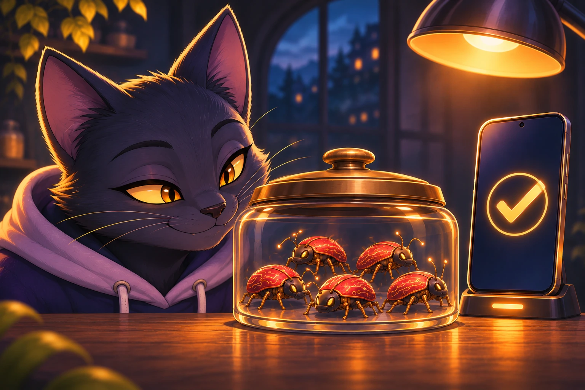
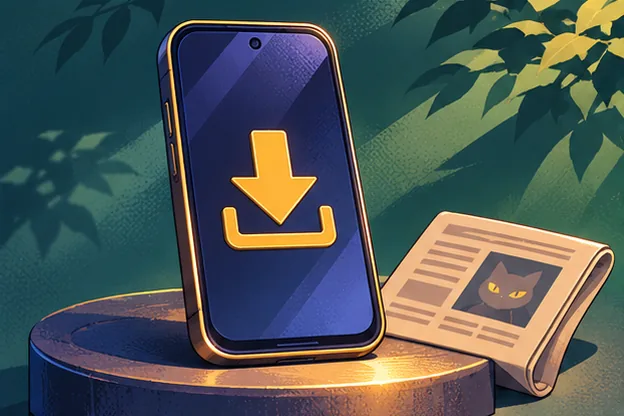
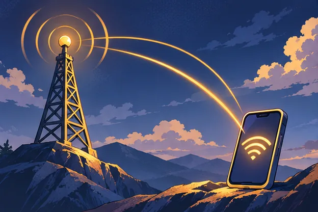

Новости приложения
Версия 2.2Плавные переходы и стабильная сортировка
Добавлено
- Ссылки на Twitch и Telegram в разделе «О приложении».
Исправлено
- В записях исправлен фильтр «Старые», в трансляциях восстановлен «Популярные».
- Устранены рывки при свайпах между разделами и мерцание карточек при сортировке.
- Восстановлены пропущенные даты публикаций.
- Исправлены оформление карточек и закрытие клавиатуры в поиске.
- Фото в записях больше не обрезаются. Исправлены превью шоу и плейлистов.
- Аватар и публикации обновляются после правок на YouTube.
История выпусков
Версия 2.1
Исправления в новом интерфейсе
Исправлено
- Экран больше не мерцает при прокрутке с раскрытой шапкой канала.
- Карточки в одном ряду теперь одинаковой высоты, а превью Shorts выровнены по центру.
- Выбранный фильтр снова выделен рамкой. В Shorts появилась сортировка «Популярные».
- В мобильной ленте появилась кнопка обновления справа от фильтров.
- В поиске и закладках исправлены подписи трансляций и шоу.
- В разделе «О приложении» у ссылок снова видны значки и подписи.
Версия 2.0Новый интерфейс приложения
Изменено
- Новый дизайн всех экранов для телефонов и планшетов.
- Свайпы между разделами. При возврате сохраняются место в списке и сортировка.
- Поиск находит больше совпадений и показывает результаты по мере ввода.
- Обновили фильтры и сортировку во всех разделах с публикациями.
- Галерея Shorts с крупными превью.
Добавлено
- Фото в записях можно открыть на весь экран и увеличить.
- Карточка «Что нового» при первом запуске после обновления.
- История версий на официальном сайте и уведомления о важных объявлениях.
Версия 1.7.1Обновления через официальный сайт
Изменено
- Обновления снова скачиваются с официального сайта через браузер.
Исправлено
- Для обновления больше не нужно разрешать приложению установку других приложений.
- После проверки обновлений предложение установить отозванную версию исчезает.
Версия 1.7.0
Обновление внутри приложенияВыпуск отозван
Добавлено
- В этой версии обновление можно было скачать прямо в приложении.
- Появилась история версий с иллюстрациями, доступная без интернета.
Версия 1.6.0Новые публикации и закладки
Добавлено
- Фильтр «Только новое» показывает в ленте ещё не открытые публикации.
- Видео и записи можно сохранить в «На потом» из ленты или уведомления.
- Поиск находит слова в тексте загруженных записей.
Изменено
- У приложения появился значок с котом на золотом фоне.
Версия 1.5.7Уведомления в одно нажатие
Изменено
- При первом запуске достаточно разрешить уведомления. На совместимых телефонах быстрая доставка включается сразу.
- В настройках уведомлений можно оставить фоновую проверку или отключить оповещения.
Версия 1.5.6Настройка быстрой доставки
Исправлено
- Кнопка быстрой доставки появляется сразу после включения уведомлений.
Изменено
- В настройках уведомлений виден статус подключения и причина, если быстрая доставка недоступна.
Версия 1.5.5
Быстрая доставка уведомлений
Добавлено
- Быстрые уведомления на телефонах с сервисами Google. При потере связи остаётся фоновая проверка.
Исправлено
- Уведомления о новых записях приходят и при пропуске даты в ленте YouTube.
Версия 1.5.4Уведомления о новых версиях
Добавлено
- Уведомления о выходе новых версий для тех, кто включил оповещения.
Изменено
- Кнопка «Обновить» открывает файл на официальном сайте и остаётся доступной до установки.
Версия 1.5.3О приложении
Добавлено
- В разделе «О приложении» видны установленная версия и ссылка на канал в YouTube.
Версия 1.5.2Проверка канала в фоне
Исправлено
- Проверка публикаций возобновляется после сбоя или перезагрузки телефона.
Изменено
- Уведомления стали короче.
- Последние публикации и обложки остаются доступны при сбое YouTube.
Версия 1.5.1Новый адрес обновлений
Исправлено
- После смены адреса официального сайта приложение снова находит обновления.
Версия 1.5Проверка новых версий
Добавлено
- При запуске приложение проверяет новые версии. Если обновление доступно, появляется кнопка «Обновить».
Версия 1.4.2Уведомления при первом запуске
Добавлено
- Уведомления можно включить при первом запуске, а позже изменить выбор в настройках уведомлений.
- Из настроек фоновой работы можно перейти к параметрам приложения и экономии заряда в Android.
Версия 1.4.1Каждая запись на своём экране
Изменено
- В ленте записей виден краткий анонс. Нажатие на карточку открывает полный текст, фотографии и опросы.
Версия 1.4.0Уведомления о записях
Добавлено
- Уведомления о новых записях сообщества открывают саму публикацию.
Изменено
- Единое оформление карточек во всех разделах. Полное название ролика видно под крупным превью.
Версия 1.3.0Все публикации в одной ленте
Добавлено
- Общая лента для видео, Shorts, записей и прошедших трансляций. Новые публикации идут первыми, на карточках указан формат.
Версия 1.2.0Метка «Новое»
Добавлено
- После первой загрузки ленты новые публикации отмечаются меткой «Новое». После просмотра метка исчезает.
Версия 1.1.1Выбранная вкладка остаётся на виду
Исправлено
- Выбранная вкладка остаётся на экране при прокрутке раздела.
Версия 1.1.0Поиск по каналу
Добавлено
- Поиск видео и Shorts по названию.
- Галочка и число подписчиков в шапке канала.
Изменено
- Записи можно читать в приложении. Обложки обновляются вместе с лентой.
Версия 1.0.1Первый выпуск для Android
Добавлено
- Видео, Shorts, эфиры, плейлисты и записи канала доступны без входа в аккаунт.
- Ролики открываются в YouTube. Ленту можно обновить жестом вниз.
- Уведомления о новых видео и Shorts.